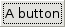
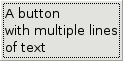
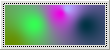

A container that can only contain one child, and accepts events.
draws a bevelbox around itself.
GTK2.Button("A button")

GTK2.Button("A button\nwith multiple lines\nof text")

GTK2.Button()->add(GTK2.Image(GTK2.GdkImage(0)->set(Image.Image(100,40)->test())))

Properties:
int focus-on-click
GTK2.Widget image
string label
int relief
int use-stock
int use-underline
float xalign
float yalign
Style properties:
int child-displacement-x
int child-displacement-y
GTK2.Border default-border
GTK2.Border default-outside-border
int displace-focus
int image-spacing
Signals:
activate
clicked
Called when the button is pressed, and then released
enter
Called when the mouse enters the button
leave
Called when the mouse leaves the button
pressed
Called when the button is pressed
released
Called when the button is released
 GTK2.Box()->set_spacing()
GTK2.Box()->set_spacing()